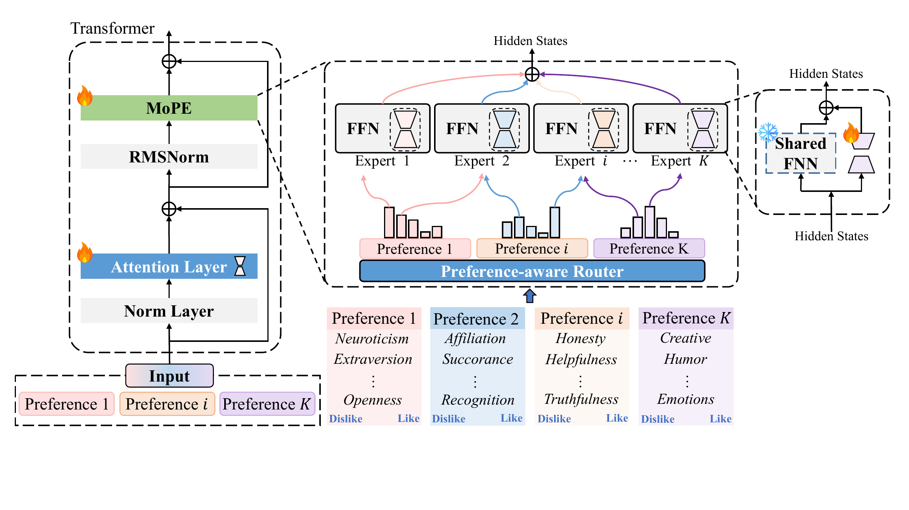

MoPE：用低秩偏好专家探索大模型的个性化对齐
如何让一个模型适应多种偏好组合？从偏好表示、低秩专家到动态路由，聊聊我对个性化对齐的探索。
同一个问题，有人希望直接得到结论，有人希望看到推导；有人偏爱正式表达，有人更喜欢轻松的交流。对大语言模型来说，“回答得好”不仅取决于任务，也取决于回答面向谁。个性化对齐要处理的，正是这些用户之间、场景之间的差异。
我想探索的是：能否把偏好适配拆成可以复用、可以组合的模块，让同一个模型服务于不同用户？MoPE（Mixture of Low-Rank Preference Experts）由此出发：保留共享的基础模型，用一组轻量的低秩专家承载不同偏好，再根据用户信号决定这些专家如何参与计算。
为什么一个偏好适配器还不够？
统一的偏好优化目标通常把许多用户的反馈放在一起学习。当反馈包含冲突时，一个没有充分利用用户条件的模型可能学到折中的回答方式。这样的折中可以提高整体表现，却未必符合某个具体用户的期待。
逐用户训练又会带来存储、维护和数据稀疏的问题。更麻烦的是，偏好往往同时存在：简洁、专业、友好可以共同影响一次回答，而同一个用户在不同任务中也会改变这些维度的权重。为每一种组合单独训练一个模型，很难扩展。
例如，用户希望“用专业但友好的语言，简短解释一个技术问题”。专业、友好和简洁同时影响这次回答，MoPE 希望让这种组合反映到模型内部的适配计算中。
从平均偏好到可调节的偏好空间
偏好对齐首先要回答一个问题：我们到底在优化谁的偏好？RLHF 可以通过奖励模型学习反馈，再优化生成策略；DPO 则直接利用回答之间的偏好比较。无论选择哪一种优化方式，把不同用户的反馈汇总后，仍然需要考虑其中的差异。优化算法本身不会自动为我们保留用户身份和偏好条件。
一个自然的出发点是多目标表示：用向量 r(x, y) 描述回答在不同维度上的表现，用用户权重 v 表达这些维度的相对重要性，得到 R(x, y, v) = vᵀr(x, y)。这提供了一个直观的控制接口，不过线性加权能表达哪些取舍，取决于维度的定义和评分尺度。
我更感兴趣的是把这种控制延伸到一个连续的偏好空间。用户可以调整表达风格、信息详略或不同目标的侧重，模型则随条件改变行为。这里需要区分“参数可以连续插值”和“生成行为可以平滑控制”：前者容易写成公式，后者需要通过实验验证。
在实现路径上，可以把偏好写进 system message，也可以分别训练适配器后进行组合。前者依赖模型理解并执行偏好指令的能力，后者需要处理模块复用与参数干扰。MoPE 关注的是两者之间的连接：用偏好条件控制一组可复用的低秩专家，让适配发生在模型内部。
把模型适配拆成共享部分与偏好专家
LoRA 用低秩矩阵表示权重增量。对于冻结的基础权重 W₀，引入两个可训练矩阵 A 和 B：
若 W₀ 的形状为 m × d，A 和 B 的形状分别为 m × r 与 r × d，且 r 远小于 m、d，那么可训练参数量由 md 降为 r(m + d)。这使维护多个适配模块比维护多个完整模型更可行，但多个专家仍会增加存储和计算开销。
我的设计是让 Attention 模块共享一组适配器，在 FFN 模块中配置多组低秩偏好专家。共享 Attention 学习共同的表示调整，FFN 专家承担偏好相关的差异化变换。结构上的分工为偏好解耦提供了空间，实际分工是否形成，还要看专家的表示与生成行为。
| 部分 | 设计职责 |
|---|---|
| 基础模型 | 提供共享语言能力，采用 LoRA 适配时冻结基础权重。 |
| Attention 适配器 | 在不同专家间共享，学习共同的表示调整。 |
| FFN 偏好专家 | 用多个低秩模块承载不同偏好类别。 |
| 路由器 | 根据偏好信号分配专家的参与权重。 |

沿图从左到右看，MoPE 位于 Transformer 的 FFN 位置；中部的偏好感知路由器决定不同专家如何参与计算；右侧进一步展开单个专家，展示冻结的共享 FFN 与可训练低秩分支。图中的多条彩色连线表达偏好与专家之间的组合关系，并不单独确定路由归一化或稀疏选择的实现。
动态路由：从用户偏好到专家组合
用 M 表示偏好维度数、K 表示专家数，用户偏好可以写成向量 p ∈ ℝᴹ。我的思路是把相关偏好归入共享专家，让 K 小于 M，再由路由器把偏好条件映射为 K 个专家权重。人格特质、动机与社会需求、沟通风格等都可以作为组织偏好维度的参考，但分组是否合理，需要通过专家的实际行为来检验。
这里的 x 表示当前任务，p 表示用户偏好。只使用 p 可以描述用户级的专家组合，引入 x 则可以表达任务相关的调整。同一个用户在查找事实和讨论创意时，可能需要不同的组合。偏好向量也应允许随交互更新，而不是把用户固定在一个永久标签里。
在一个采用线性低秩专家的适配位置，可以用下面的示意式理解组合过程。其中 h 是输入表示，αᵢ 是当前条件下第 i 个专家的权重：
这说明被组合的是中间表示或参数增量，而不是把几段生成文本相加。若权重在该次计算中固定，且专家增量位于同一线性映射上，才可以写成等效增量 ΔW = Σᵢ αᵢAᵢBᵢ。整个非线性 FFN 的输出混合不能直接视为同样的参数合并。
计算成本取决于路由粒度。权重若随输入甚至 token 变化，就需要相应地执行路由与专家计算；按请求固定权重则有不同的缓存与合并机会。稀疏选择、权重归一化和专家激活数量都影响最终开销，所以我会把参数效率与实际推理延迟分开评估。
训练：让偏好有区分，也能被组合
训练数据包含任务、用户偏好和一对有序反馈：用户更喜欢的回答 yw，以及不喜欢的回答 yl。核心目标是在给定任务和偏好的条件下，提高模型对前者的相对偏好。SFT 可以学习条件化的回答方式，DPO 则可以利用成对反馈进一步调整策略；二者解决的问题与专家如何分工有关，但并不相同。
我希望从三个层次分析专家。首先是专家之间：对同一批代表性问题分别激活不同适配器，比较隐藏表示与输出行为。CKA 或 CCA 可以帮助观察表示相似性，再结合偏好满足程度判断差异是否有意义。
其次是一个专家内部的不同偏好维度。共享一个专家应该带来可复用的知识，同时也要能区分它负责的不同条件。最后是同一维度的相反取向，例如“喜欢幽默”和“不喜欢幽默”。保持问题不变，只改变这一条件，可以检查模型是否真正响应了偏好信号。
这些观察也能指导对比学习：鼓励相关表示共享结构，同时保留维度与取向之间需要的区分。但我不希望把“拉大专家距离”本身当作目标。过强的分离会破坏知识共享，表示距离的变化最终必须对应到有用的行为差异。这部分的具体约束仍在探索中。
初步实验：可以看到什么？
下面是一组基于 Llama-3.1-8B-Instruct 的初步对比，覆盖 UF-P-4、PRISM、P-Soups 与 AlignX 测试集；AlignX 分为 UGC、PAIR 和 Demo 三列。表中的 PMoE 是这组实验保留的配置名称，这里只比较同一张表内的结果。
| 模型 | UF-P-4 | PRISM | P-Soups | AlignX UGC | AlignX PAIR | AlignX Demo |
|---|---|---|---|---|---|---|
| AlignXPERT PBA-Full | 0.485 | 0.432 | 0.166 | 0.425 | 0.406 | 0.130 |
| AlignXPERT PBA-Sub | 0.474 | 0.466 | 0.174 | 0.439 | 0.451 | 0.181 |
| LoRA | 0.438 | 0.624 | 0.462 | 0.405 | 0.374 | 0.403 |
| PMoE | 0.532 | 0.663 | 0.496 | 0.507 | 0.516 | 0.518 |
在这张表的记录中，PMoE 在六列上均高于 LoRA。例如，UF-P-4 从 0.438 提高到 0.532，绝对增加 9.4 个百分点；AlignX PAIR 从 0.374 提高到 0.516，增加 14.2 个百分点。这是对表格数值的描述，尚不构成统计显著性的判断。
我把这组结果看作继续探索专家组合的信号。要判断收益是否稳定，还需要在统一训练预算和评估协议下重复实验，并报告不同随机种子的波动。对组合泛化的判断，则需要单独留出训练时没有出现的偏好组合。
专家应该放在哪些层？
在一组层深对比中，仅适配前部 Attention 得到 0.520，覆盖全部被比较层段的 Attention 得到 0.559；同时适配 Attention 与 FFN 时，对应结果为 0.524 和 0.564。更广的适配范围在这组实验里带来更高分数，但是否值得增加训练成本，还需要参数量和耗时的对照。
另一组层深消融则显示出数据集差异：first 配置在 UF-P-4 与 AlignX 三列上更好，last 配置在 PRISM 和 P-Soups 上更好。例如 PRISM 的 first 与 last 分别是 0.663 和 0.686，P-Soups 则是 0.496 和 0.560。由此不能得出“偏好只存在于浅层”或“前层始终最优”。
我更愿意把层位置看作一个需要和偏好任务一起选择的设计变量。比较 first、middle、last 时，必须明确实际模块索引，并控制可训练参数量与预算，才能分清收益究竟来自位置还是容量。
下一步需要回答的问题
我更关心的是，专家是否学到了能够跨场景复用的偏好，而不是训练数据中的表面相关性。一个有区分力的评估应把“见过的偏好维度”和“没见过的偏好组合”分开，再检查同一用户在不同任务中的表现。
在实现上，需要先明确偏好向量、分组规则、路由粒度和训练目标，再分别移除路由、专家分组与对比约束，观察收益来自哪里。专家权重或特征的相似性分析可以提供线索，但还需要行为实验来确认模块实际控制了什么。
最后，个性化能力应该与通用能力和部署成本一起报告。增加专家后，参数量、显存、延迟与吞吐发生了什么变化？偏好满足程度提高时，事实准确性和任务完成质量是否保持稳定？只有补齐这些证据，才能判断这种可组合适配是否值得用于真实系统。
MoPE 提供了一条值得探索的路径：以共享模型为基础，将偏好相关的调整放进轻量专家，再通过条件路由组合它们。当前的结构设想和实验记录给出了起点，而偏好表示是否可靠、专家是否可组合、收益能否复现，仍是这项工作接下来要回答的问题。
延伸阅读
- Aligning to Thousands of Preferences via System Message Generalization：从 system message 的角度思考多样偏好的表达与泛化。
- Interpretable Preferences via Multi-Objective Reward Modeling and Mixture-of-Experts：从多目标奖励建模与专家组合的角度理解偏好表示。
- The PRISM Alignment Project：关注真实用户在交互中的多样偏好与反馈。